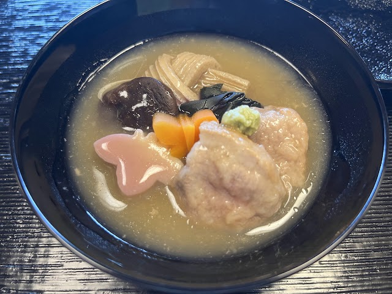
| 営業時間 | 月・火・水・木・金・土・日 8:00〜21:00 |
|---|---|
| 定休日 | なし(要最終確認) |
| 住所 | 石川県金沢市寺町５丁目１−８ |
| 予約 | 可 — ☎ 076-241-2181 ／ 公式サイト |
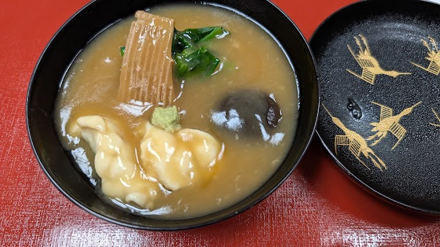
| 営業時間 | 月・火・木・金・土・日 11:00〜14:00, 17:00〜21:00 |
|---|---|
| 定休日 | 水曜 |
| 住所 | 石川県金沢市尾山町２−２７ |
| 予約 | 可 — ☎ 076-221-0305 ／ 公式サイト |
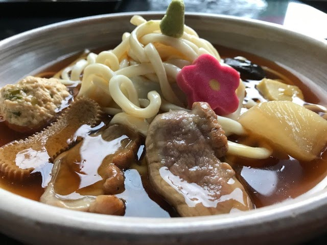
| 営業時間 | 月・火・木・金・土・日 11:30〜14:00, 17:00〜21:00 |
|---|---|
| 定休日 | 水曜 |
| 住所 | 石川県金沢市香林坊２丁目１２−１５ |
| 予約 | 可 — ☎ 050-5493-0335 ／ 公式サイト |
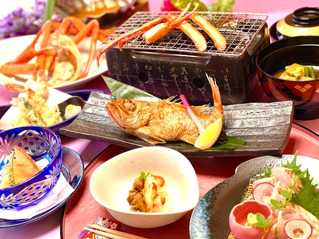
| 営業時間 | 月・火・水・木・金・土・日 11:30〜14:30, 17:00〜22:00 |
|---|---|
| 定休日 | なし(要最終確認) |
| 住所 | 石川県金沢市此花町７−５−１ |
| 予約 | 可 — ☎ 050-5484-8804 ／ 公式サイト |
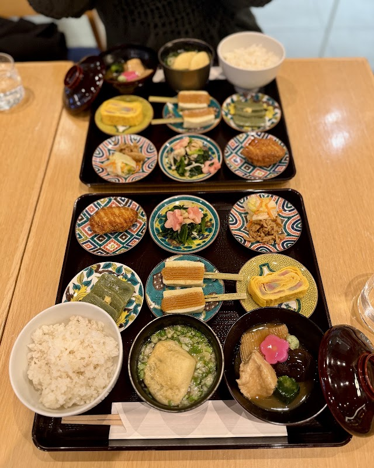
| 営業時間 | 月・火・水・木・金・土・日 9:00〜21:00 |
|---|---|
| 定休日 | なし(要最終確認) |
| 住所 | 石川県金沢市木ノ新保町１丁目７−１−１ |
| 予約 | 要確認 — ☎ 076-235-2322 ／ 公式サイト |
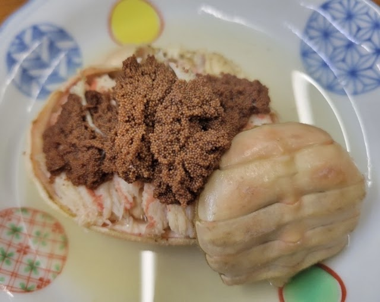
| 営業時間 | 月・木・金・土・日 17:30〜21:30 |
|---|---|
| 定休日 | 火・水曜 |
| 住所 | 石川県金沢市片町２丁目１−２３ |
| 予約 | 要確認 — ☎ 076-221-4676 |
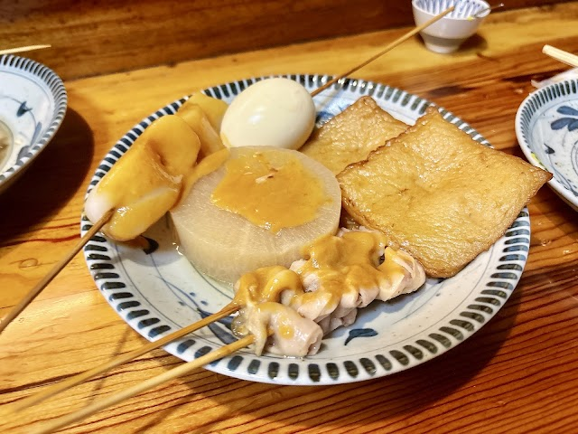
| 営業時間 | 月・火・水・木・金・土 16:00〜21:00 |
|---|---|
| 定休日 | 日曜 |
| 住所 | 石川県金沢市片町１丁目３−２９ |
| 予約 | 可 — ☎ 076-231-1018 ／ 公式サイト |
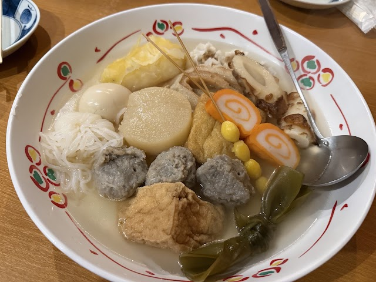
| 営業時間 | 火・水・木・金・土 12:00〜15:00, 16:00〜23:00 ／ 日 12:00〜15:00, 16:00〜22:00 |
|---|---|
| 定休日 | 月曜 |
| 住所 | 石川県金沢市片町２丁目２１−２ |
| 予約 | 可 — ☎ 076-223-3330 ／ 公式サイト |
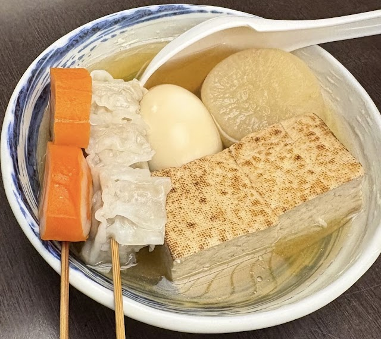
| 営業時間 | 月・火・水・木・金・土・日 11:00〜21:30 |
|---|---|
| 定休日 | なし(要最終確認) |
| 住所 | 石川県金沢市木ノ新保町１−１ 金沢百番街「あんと」 |
| 予約 | 可 — ☎ 076-260-3722 ／ 公式サイト |
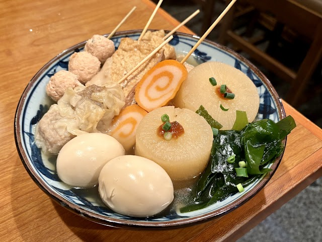
| 営業時間 | 月・火・水・木・金・土 16:00〜21:30 |
|---|---|
| 定休日 | 日曜 |
| 住所 | 石川県金沢市片町１丁目１０−３ |
| 予約 | 可 — ☎ 076-222-6117 ／ 公式サイト |
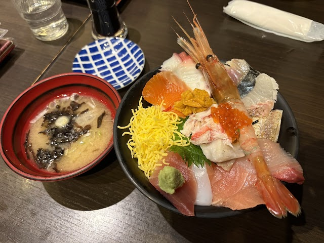
| 営業時間 | 月・火・水・木・金・土・日 8:00〜21:00 |
|---|---|
| 定休日 | なし(要最終確認) |
| 住所 | 石川県金沢市下堤町３８−１ |
| 予約 | 要確認 — ☎ 076-208-3571 ／ 公式サイト |
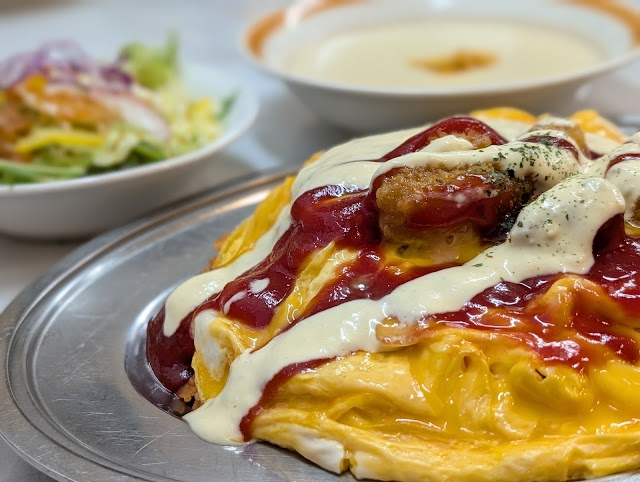
| 営業時間 | 月・火・木・金・土・日 11:00〜14:45, 17:00〜19:50 |
|---|---|
| 定休日 | 水曜 |
| 住所 | 石川県金沢市片町２丁目９−１５ |
| 予約 | 要確認 — ☎ 076-221-2646 ／ 公式サイト |
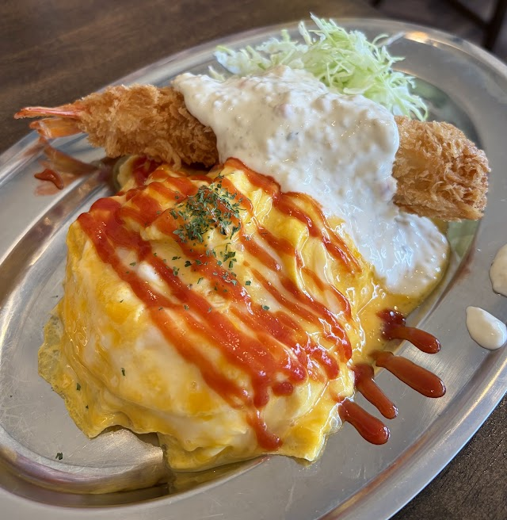
| 営業時間 | 月・水・木・金・土・日 11:00〜14:45 |
|---|---|
| 定休日 | 火曜 |
| 住所 | 石川県金沢市片町２丁目８−１０ |
| 予約 | 可 — ☎ 076-216-5922 ／ 公式サイト |
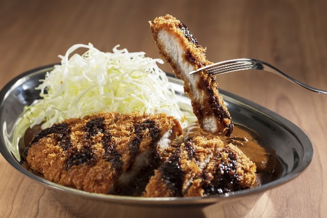
| 営業時間 | 月・火・水・木・金・土・日 11:00〜23:00 |
|---|---|
| 定休日 | なし(要最終確認) |
| 住所 | 石川県野々市市高橋町２０−１７ |
| 予約 | 要確認 — ☎ 076-248-1497 ／ 公式サイト |
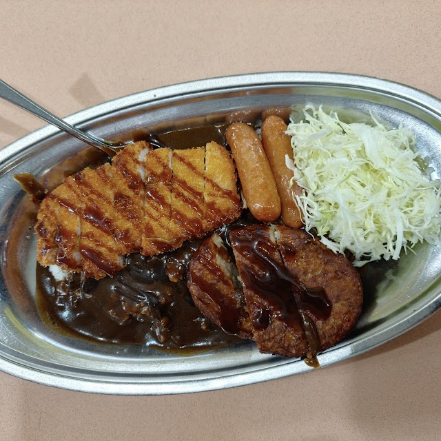
| 営業時間 | 月・火・水・木・金・土・日 11:00〜20:00 |
|---|---|
| 定休日 | なし(要最終確認) |
| 住所 | 石川県金沢市広坂１丁目１−４８ ウナシンビル １F |
| 予約 | 要確認 — ☎ 076-265-6617 ／ 公式サイト |
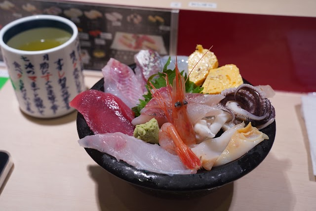
| 営業時間 | 月・火・水・木 7:00〜13:30 ／ 金・土・日 7:00〜14:30 |
|---|---|
| 定休日 | なし(要最終確認) |
| 住所 | 石川県金沢市青草町８８ 近江町いちば館 1F |
| 予約 | 要確認 — ☎ 076-222-2621 ／ 公式サイト |
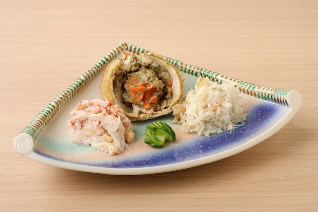
| 営業時間 | 月・火・水・木・金・土 17:00〜22:00 |
|---|---|
| 定休日 | 日曜 |
| 住所 | 石川県金沢市長町１丁目２−２２ 味処高崎 |
| 予約 | 可 — ☎ 076-231-0116 ／ 公式サイト |
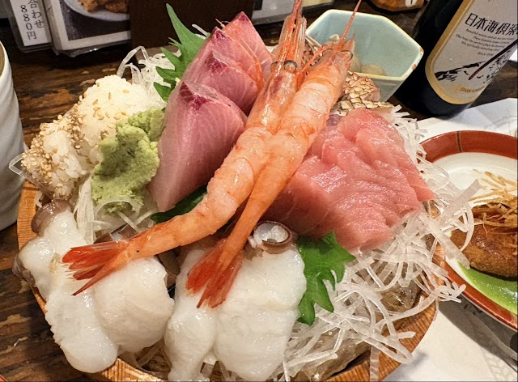
| 営業時間 | 月・火・水・木・金・土 17:30〜22:30 |
|---|---|
| 定休日 | 日曜 |
| 住所 | 石川県金沢市柿木畠３−８ |
| 予約 | 可 — ☎ 076-221-4194 ／ 公式サイト |
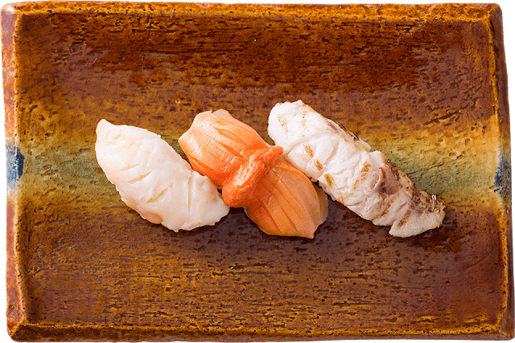
| 営業時間 | 月・火・木・金・土・日 12:00〜14:00, 17:30〜22:00 |
|---|---|
| 定休日 | 水曜 |
| 住所 | 石川県金沢市東山１丁目１６−２ みつ川 |
| 予約 | 可 — ☎ 076-253-5005 ／ 公式サイト |
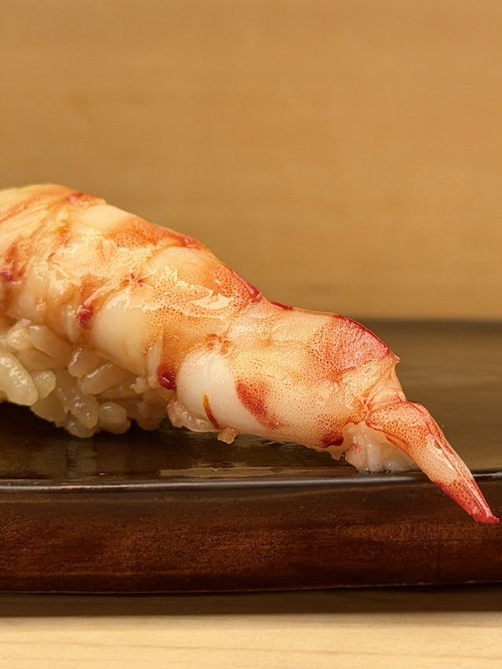
| 営業時間 | 月・火・水・木・金・土 17:00〜22:00 |
|---|---|
| 定休日 | 日曜 |
| 住所 | 石川県金沢市彦三町１丁目８−２６ |
| 予約 | 可 — ☎ 050-5870-8418 ／ 公式サイト |
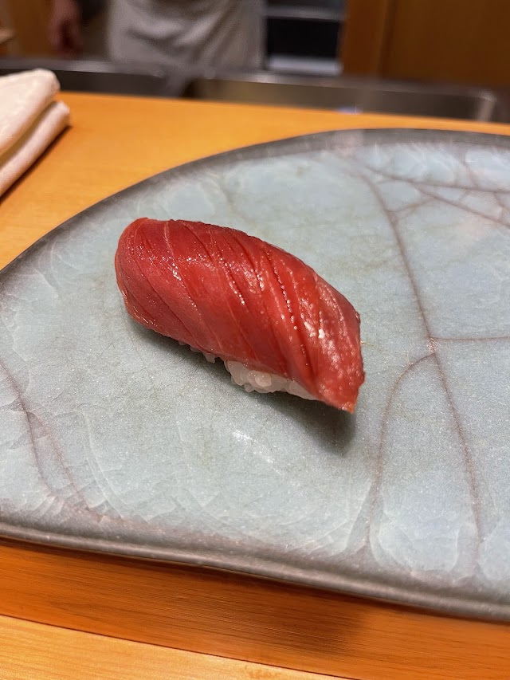
| 営業時間 | 月・火・金・土・日 12:00〜14:00, 18:00〜22:00 |
|---|---|
| 定休日 | 水・木曜 |
| 住所 | 石川県金沢市尾山町１２−５ |
| 予約 | 可 — ☎ 076-255-2768 |
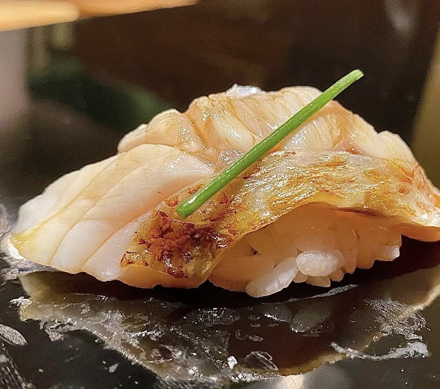
| 営業時間 | 月・火・木・金・土 12:00〜14:00, 17:00〜21:00 |
|---|---|
| 定休日 | 水・日曜 |
| 住所 | 石川県金沢市木倉町４−１０ |
| 予約 | 可 — ☎ 076-231-7447 |
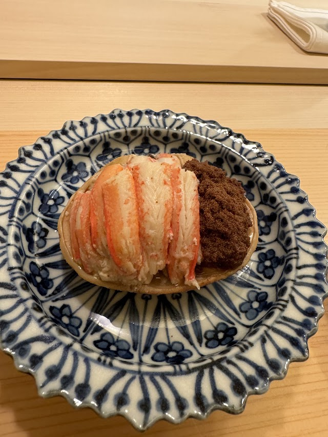
| 営業時間 | 月・火・水・木・金・土・日 18:00〜22:00 |
|---|---|
| 定休日 | なし(要最終確認) |
| 住所 | 石川県野々市市下林４丁目４８ |
| 予約 | 可 — ☎ 076-246-7781 ／ 公式サイト |
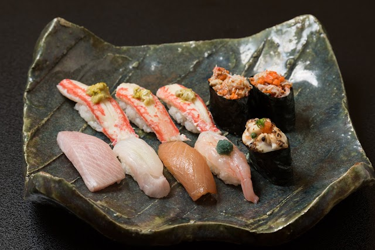
| 営業時間 | 月・火・金・土 11:00〜22:00 ／ 日 11:00〜20:00 |
|---|---|
| 定休日 | 水・木曜 |
| 住所 | 石川県金沢市石引１丁目１７−３ |
| 予約 | 可 — ☎ 076-221-5057 ／ 公式サイト |
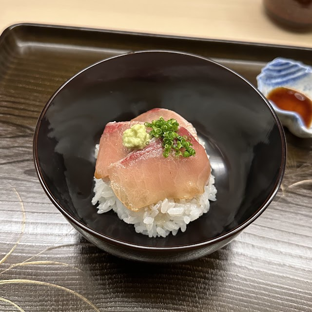
| 営業時間 | 月・火・木・金・土 17:00〜19:30, 20:00〜22:30 ／ 水・日 12:00〜14:30, 17:00〜19:30, 20:00〜22:30 |
|---|---|
| 定休日 | なし(要最終確認) |
| 住所 | 石川県金沢市並木町３−３６ |
| 予約 | 可 — ☎ 076-255-1446 |
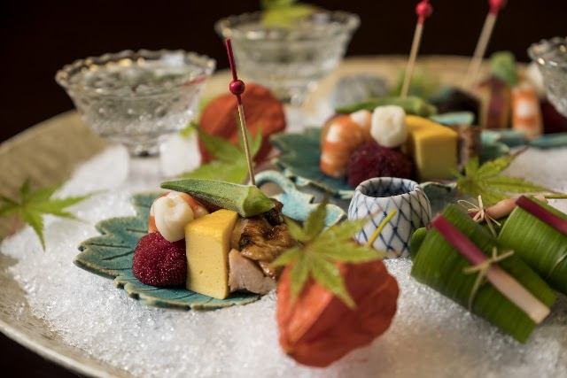
| 営業時間 | 月・火・水・木・金・土 17:30〜22:00 |
|---|---|
| 定休日 | 日曜 |
| 住所 | 石川県金沢市片町２丁目２９−７ |
| 予約 | 可 — ☎ 076-233-3331 ／ 公式サイト |
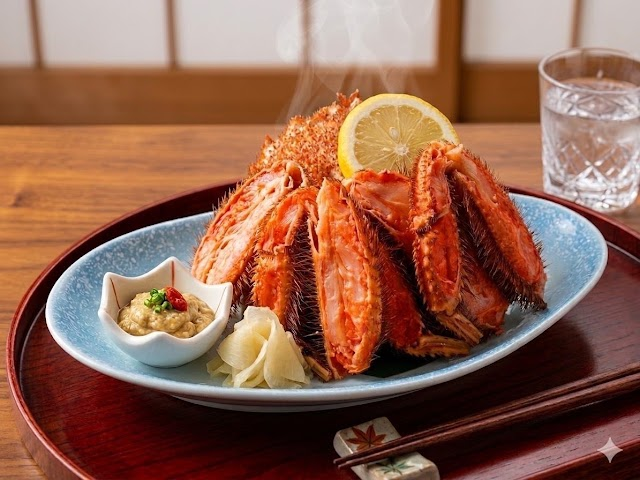
| 営業時間 | 月・火・水・木・金・土 18:30〜22:00 |
|---|---|
| 定休日 | 日曜 |
| 住所 | 石川県金沢市高岡町４−５ |
| 予約 | 可 — ☎ 050-5493-3470 ／ 公式サイト |
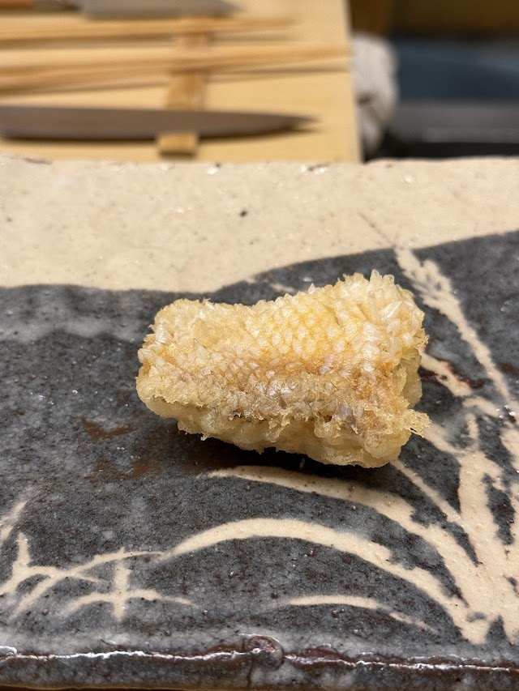
| 営業時間 | 月・火・木・金・土 12:00〜14:00, 18:00〜20:00 |
|---|---|
| 定休日 | 水・日曜 |
| 住所 | 石川県金沢市池田町４番丁３４ |
| 予約 | 可 — ☎ 076-223-0023 ／ 公式サイト |
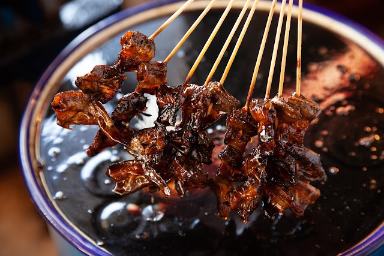
| 営業時間 | 火・水・木・金・土・日 10:30〜21:00 |
|---|---|
| 定休日 | 月曜 |
| 住所 | 石川県金沢市金石北１丁目１−１ |
| 予約 | 可 — ☎ 076-268-9770 ／ 公式サイト |
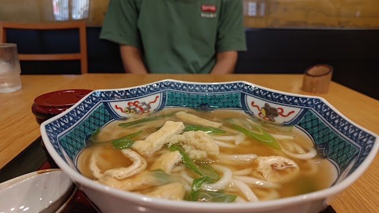
| 営業時間 | 月・木・金・土・日 11:00〜21:00 ／ 火 11:00〜16:00 |
|---|---|
| 定休日 | 水曜 |
| 住所 | 石川県金沢市下近江町４２ |
| 予約 | 可 — ☎ 076-221-0435 |
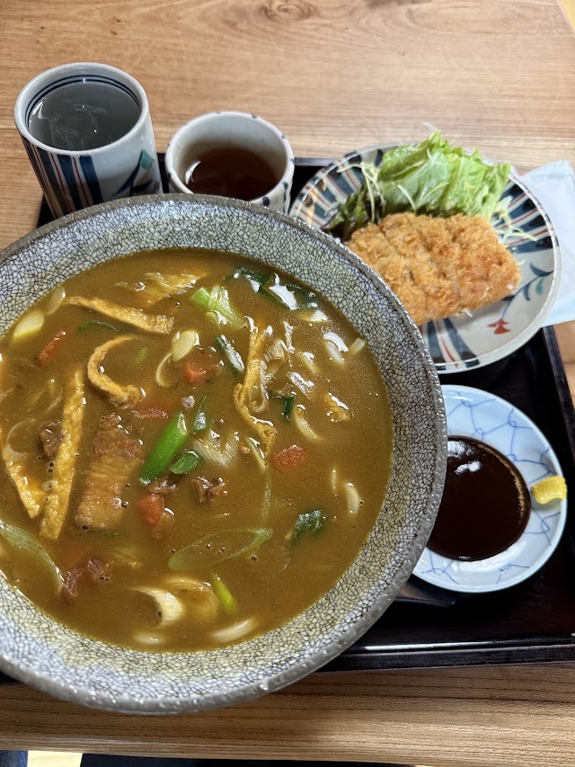
| 営業時間 | 月・火・木・金 11:30〜14:00, 17:30〜20:00 ／ 土・日 11:00〜20:00 |
|---|---|
| 定休日 | 水曜 |
| 住所 | 石川県金沢市彦三町１丁目９−３１ |
| 予約 | 要確認 — ☎ 076-231-7205 ／ 公式サイト |
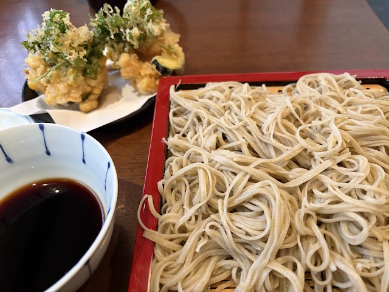
| 営業時間 | 火・水・木・金・土 11:30〜14:00, 17:30〜19:30 ／ 日 11:30〜19:30 |
|---|---|
| 定休日 | 月曜 |
| 住所 | 石川県金沢市柿木畠３−３ |
| 予約 | 可 — ☎ 076-265-6870 |
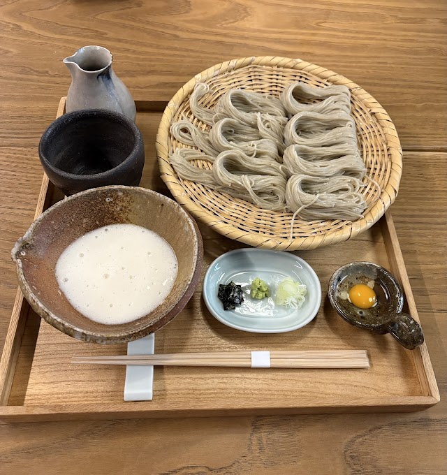
| 営業時間 | 火・水・木・金・土 11:00〜14:00 |
|---|---|
| 定休日 | 月・日曜 |
| 住所 | 石川県金沢市長田２丁目２０−１３ |
| 予約 | 可 — ☎ 076-205-4591 ／ 公式サイト |
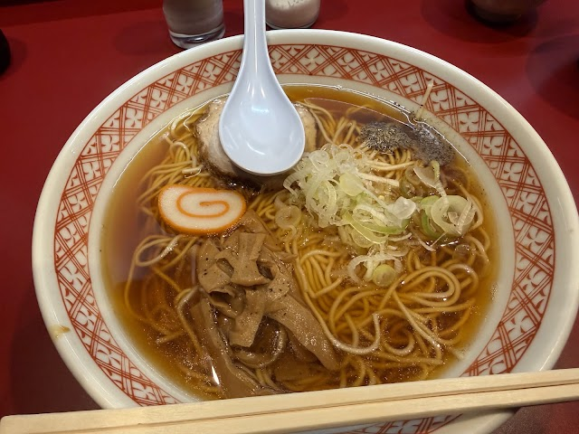
| 営業時間 | 月・火・水・木・金・土 18:00〜1:00 |
|---|---|
| 定休日 | 日曜 |
| 住所 | 石川県金沢市本町２丁目９−２９ |
| 予約 | 要確認 — ☎ 076-265-7735 ／ 公式サイト |
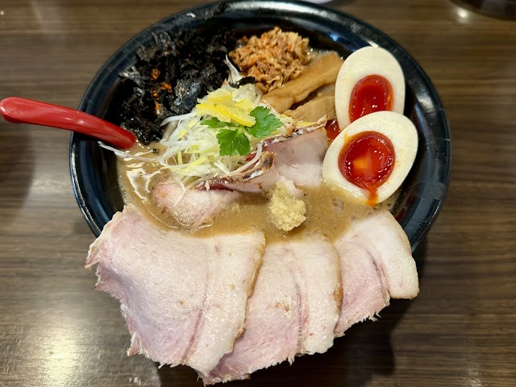
| 営業時間 | 月・火・水・木・金・土・日 11:00〜14:30, 17:30〜22:30 |
|---|---|
| 定休日 | なし(要最終確認) |
| 住所 | 石川県金沢市堀川町６−３ |
| 予約 | 要確認 — ☎ 076-260-7737 ／ 公式サイト |
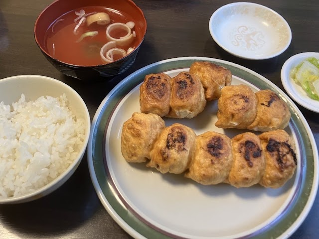
| 営業時間 | 月・木・金・土・日 11:00〜21:00 |
|---|---|
| 定休日 | 火・水曜 |
| 住所 | 石川県金沢市もりの里１丁目２５９ |
| 予約 | 要確認 — ☎ 076-261-0825 ／ 公式サイト |
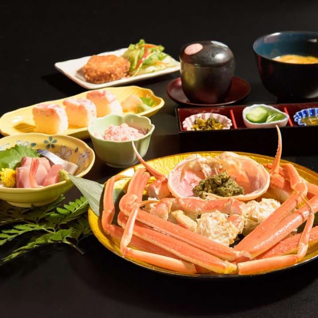
| 営業時間 | 月・火・水・木・金・土・日 17:00〜22:00 |
|---|---|
| 定休日 | なし(要最終確認) |
| 住所 | 石川県金沢市並木町２−１８ |
| 予約 | 可 — ☎ 076-222-0517 ／ 公式サイト |
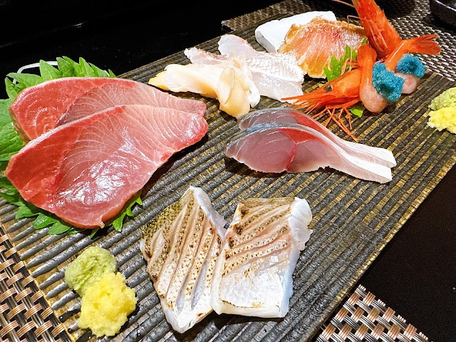
| 営業時間 | 月・火・水・木・金・土 18:00〜22:30 |
|---|---|
| 定休日 | 日曜 |
| 住所 | 石川県金沢市香林坊２丁目１２−１５ 鞍月用水側 ライオンズマンション向かいの小橋を渡ってお入りください（小川に面しています |
| 予約 | 可 — ☎ 050-5484-3294 ／ 公式サイト |
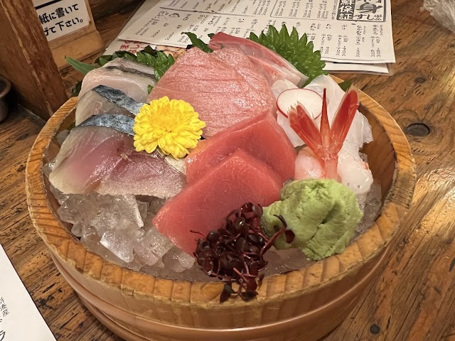
| 営業時間 | 月・火・水・木 17:00〜23:00 ／ 金 17:00〜23:30 ／ 土 17:00〜0:00 |
|---|---|
| 定休日 | 日曜 |
| 住所 | 石川県金沢市片町２丁目２−２０ 木谷ビル 2F |
| 予約 | 可 — ☎ 076-222-3757 ／ 公式サイト |
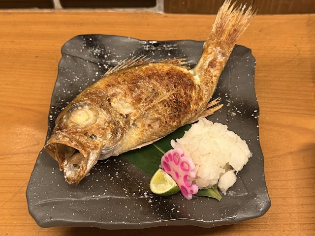
| 営業時間 | 月・火・水・木・金・土・日 17:00〜23:30 |
|---|---|
| 定休日 | なし(要最終確認) |
| 住所 | 石川県金沢市片町２丁目２４−２ |
| 予約 | 可 — ☎ 076-225-8724 ／ 公式サイト |
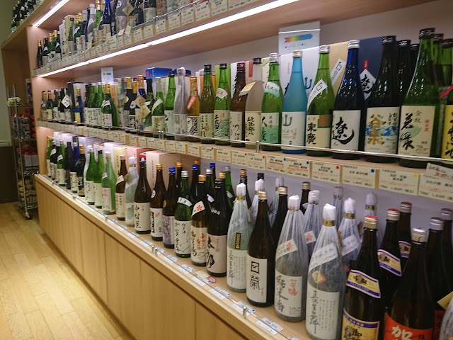
| 営業時間 | 月・火・水・木・金・土・日 8:30〜20:00 |
|---|---|
| 定休日 | なし(要最終確認) |
| 住所 | 石川県金沢市木ノ新保町１−１ |
| 予約 | 要確認 — ☎ 076-260-3739 ／ 公式サイト |
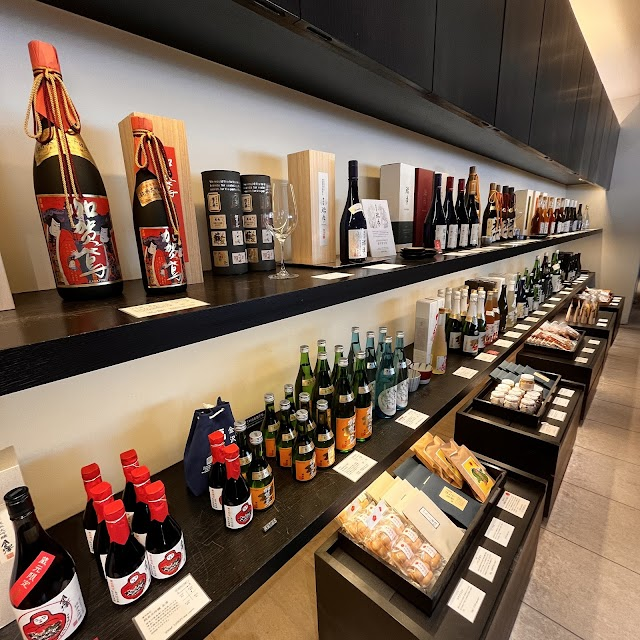
| 営業時間 | 月・火・水・木・金・土・日 10:00〜18:00 |
|---|---|
| 定休日 | なし(要最終確認) |
| 住所 | 石川県金沢市石引２丁目８−３ |
| 予約 | 要確認 — ☎ 076-223-1117 ／ 公式サイト |
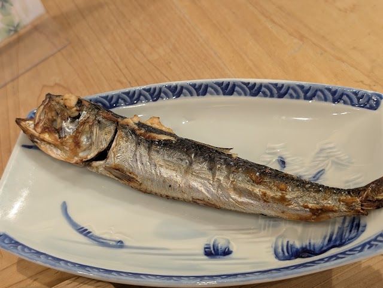
| 営業時間 | 月・金 11:30〜15:00 ／ 水・木 11:30〜15:00, 17:00〜19:00 ／ 土・日 11:30〜19:00 |
|---|---|
| 定休日 | 火曜 |
| 住所 | 石川県金沢市東山１丁目５−３ |
| 予約 | 可 — ☎ 076-205-3800 ／ 公式サイト |
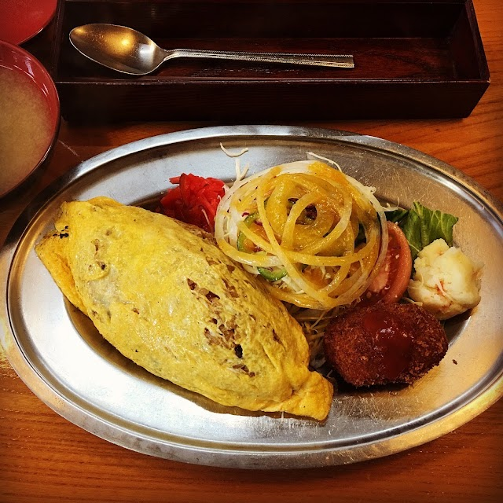
| 営業時間 | 月・水・木・金 11:30〜15:00, 17:00〜21:00 ／ 土・日 11:30〜15:00, 16:30〜21:00 |
|---|---|
| 定休日 | 火曜 |
| 住所 | 石川県金沢市東山１丁目６−６ |
| 予約 | 要確認 — ☎ 076-252-1996 ／ 公式サイト |
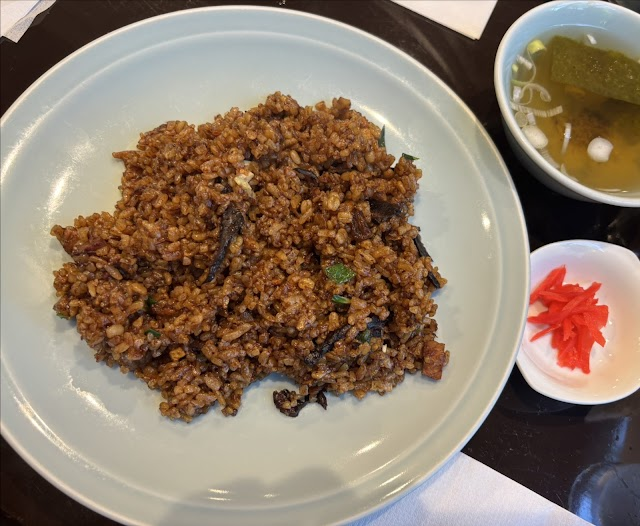
| 営業時間 | 月・水・木・金・土・日 11:00〜14:30, 17:00〜20:30 |
|---|---|
| 定休日 | 火曜 |
| 住所 | 石川県金沢市小立野３丁目２７−１２ グリルニュー狸 |
| 予約 | 可 — ☎ 076-262-6658 ／ 公式サイト |
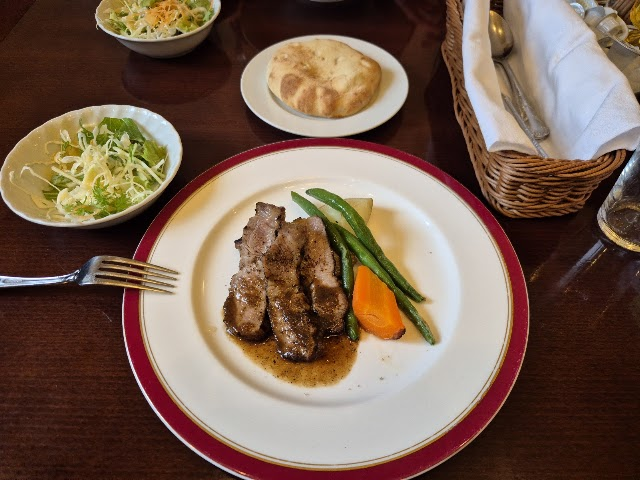
| 営業時間 | 月・火・木・金・土・日 11:00〜21:00 |
|---|---|
| 定休日 | 水曜 |
| 住所 | 石川県金沢市東山１丁目２−２−１ |
| 予約 | 可 — ☎ 076-252-5755 ／ 公式サイト |
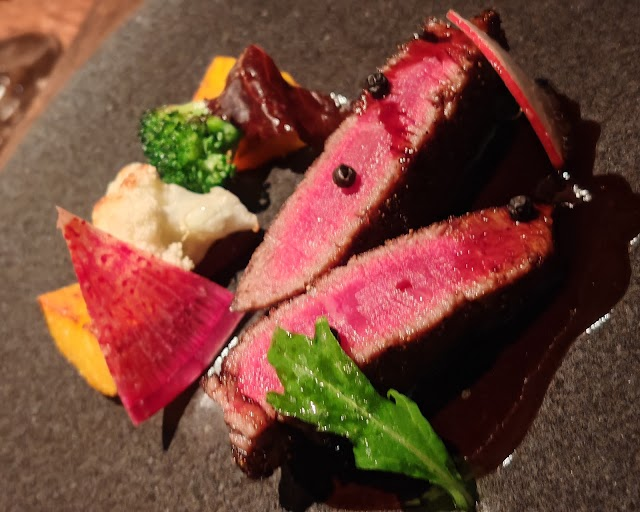
| 営業時間 | 火・水・木 17:30〜22:00 ／ 金 11:30〜14:00, 17:30〜22:00 ／ 土 11:30〜14:30, 17:30〜22:00 ／ 日 11:30〜14:00 |
|---|---|
| 定休日 | 月曜 |
| 住所 | 石川県金沢市千日町１−１６ |
| 予約 | 可 — ☎ 076-243-6651 |
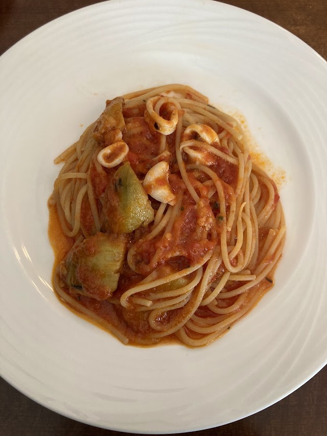
| 営業時間 | 月・火・水・木・金 11:30〜14:00, 17:30〜21:30 |
|---|---|
| 定休日 | 土・日曜 |
| 住所 | 石川県金沢市尾山町３−２ 笹井ビル |
| 予約 | 可 — ☎ 076-232-5520 |
| 営業時間 | 月・水・木・金・土・日 11:15〜14:15, 17:30〜22:00 |
|---|---|
| 定休日 | 火曜 |
| 住所 | 石川県金沢市示野町ト−４０８−３ |
| 予約 | 可 — ☎ 076-268-3833 ／ 公式サイト |
| 営業時間 | 火・水・木・金・土・日 17:00〜23:00 |
|---|---|
| 定休日 | 月曜 |
| 住所 | 石川県金沢市柿木畠２−１１ |
| 予約 | 可 — ☎ 070-8998-3933 ／ 公式サイト |
| 営業時間 | 月・火・水・木・金・土・日 9:00〜18:00 |
|---|---|
| 定休日 | なし(要最終確認) |
| 住所 | 石川県金沢市大手町１０−１５ |
| 予約 | 可 — ☎ 076-262-6251 ／ 公式サイト |
| 営業時間 | 月・火・水・木・金・土・日 10:00〜17:30 |
|---|---|
| 定休日 | なし(要最終確認) |
| 住所 | 石川県金沢市長町２丁目３−３２ |
| 予約 | 要確認 — ☎ 076-264-4223 ／ 公式サイト |
| 営業時間 | 月・火・水・金・土・日 9:00〜17:00 |
|---|---|
| 定休日 | 木曜 |
| 住所 | 石川県金沢市野町１丁目３−５９ |
| 予約 | 要確認 — ☎ 076-245-2854 ／ 公式サイト |
| 営業時間 | 月・火・木・金・土 9:00〜18:00 |
|---|---|
| 定休日 | 水・日曜 |
| 住所 | 石川県金沢市十間町４２ |
| 予約 | 要確認 — ☎ 076-232-3399 |
| 営業時間 | 火・水・木・金・土・日 8:00〜18:00 |
|---|---|
| 定休日 | 月曜 |
| 住所 | 石川県金沢市長町１丁目６−１１ |
| 予約 | 可 — ☎ 076-221-7831 ／ 公式サイト |
| 営業時間 | 月・火・水・木・金・土・日 10:00〜18:00 |
|---|---|
| 定休日 | なし(要最終確認) |
| 住所 | 石川県金沢市出羽町２−１ 石川県立美術館 内 |
| 予約 | 要確認 — ☎ 076-204-6100 ／ 公式サイト |
| 営業時間 | 月・火・金・土・日 11:00〜18:00 |
|---|---|
| 定休日 | 水・木曜 |
| 住所 | 石川県金沢市東山２丁目３−２１ |
| 予約 | 要確認 — ☎ 076-256-0465 ／ 公式サイト |
本ガイドは個人利用目的で作成。掲載情報は2026年8月時点の調査に基づく。写真出典: Google Maps投稿写真(©各投稿者/Google)。